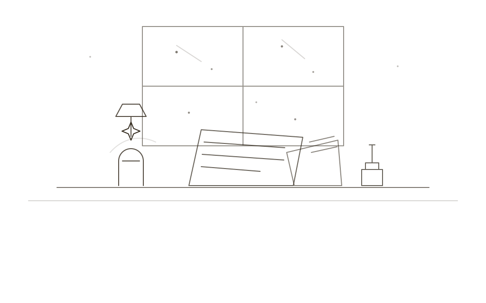

Otto costs [price], once. The trial costs nothing.
The trial
The trial is the whole program, not a cut-down one, and it opens on the sample world so you have something to take apart. Start your own world beside it whenever you like. If you buy, you keep the same program and carry on; nothing is reinstalled, and nothing you made goes anywhere.
What “a year of updates” means
You buy the program, and it is yours to keep and run for as long as your computer will run it. For a year from the day you buy, every new version is yours as well. After the year Otto doesn’t stop, nag, or shrink. You stay on the version you have, and if a later one has something you want, you can buy another year. If not, don’t.
Which computers
Windows, now. A Mac version is being made, and it will come when it is good rather than when it is due. The first time you run Otto, Windows may tell you it has “protected your PC”. Choose More info, then Run anyway.
What you get for [price]
the whole list- 1Otto for Windows, to keep and run for good.
- 2Every new version released in the twelve months after you buy.
- 3Export to JSON, Markdown, Word and CSV, all of it, with nothing extra to pay.
- 4The sample world, to take apart and learn from.
- 5A reply from the person who made it, if you write.